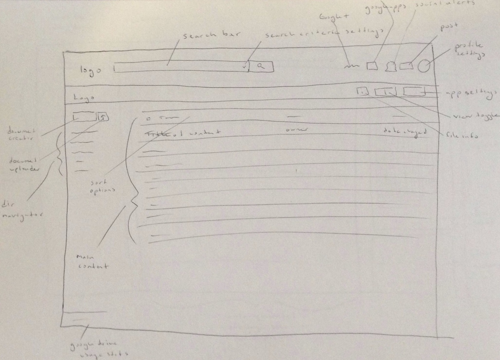
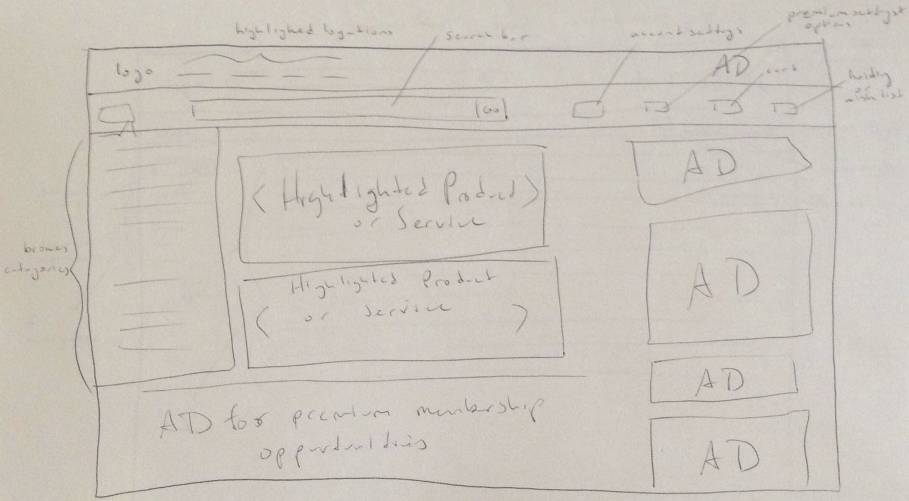
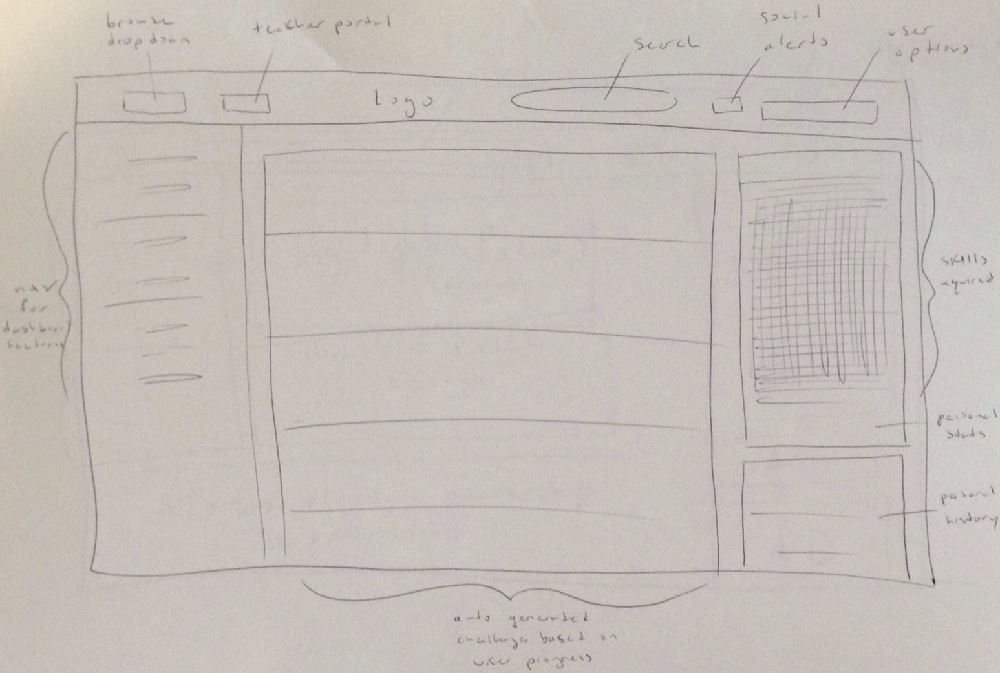

May 18th, 2014
Reverse Design
Google Drive tries to solve the problem of making it easy to create, collaborate, and retrieve documents made in, or uploaded to, the cloud. The answer to how to perform each of those activities is obvious after just a quick study of the page. Sharing options are readily available throughout, and the three main parts of the page are, in order from greatest area to least, the user's content, content retrieval tools, and content creation initiators.
Amazon has a ton of products, and all of them aren't for everybody. One of their challenges was to figure out a way to present products that are relevant each of their customers. Based on a customers wishlist, purchase, history, and product viewings, those are exactly the type of products that get presented. Amazon became much more than a bookstore over the years, and to show off their latest technology, or biggest deals, they use showcased areas of the main page. For customers with direction, the search and the browsing options are easily accessible from most pages.
Khan Academy has to keep people engaged. They accomplish this with the gamification of their content. Most of the screen is used to present the user details about their performance and progress. They also had to make it easy to seaarch their content. A search bar is almost always onscreen, returning results broken down by topic.